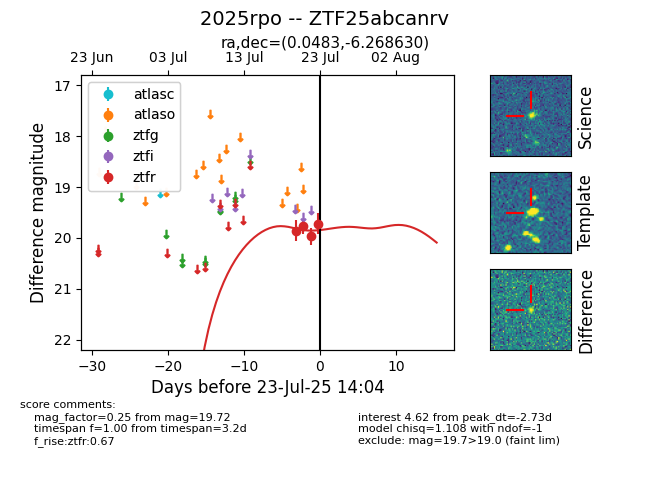

Target ZTF25abcanrv at 2025-07-23 14:04, see:
FINK: fink-portal.org/ZTF25abcanrv
Lasair: lasair-ztf.lsst.ac.uk/objects/ZTF25abcanrv
ALeRCE: alerce.online/object/ZTF25abcanrv
TNS: wis-tns.org/object/2025rpo
YSE: ziggy.ucolick.org/yse/transient_detail/2025rpo
alt names
ZTF25abcanrv (ztf,fink)
2025rpo (tns,yse)
coordinates:
equatorial (ra, dec) = (0.0483,-6.26863)
galactic (l, b) = (90.3430,-65.84376)
photometry
last ztfr=19.72
4 ztfr detections
